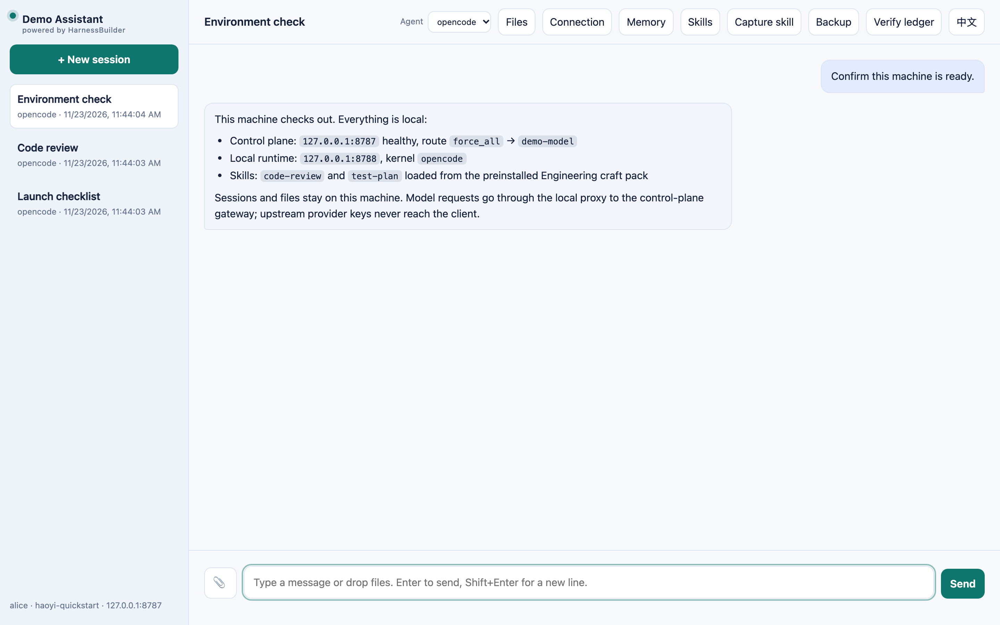

你的服务器
CONTROL PLANE- 身份、角色与设备凭据
- Ed25519 签名策略，修订只增不覆盖
- Provider 密钥 AES-256-GCM 加密
- 模型路由、配额与计费
- 计量、审计与备份密文
01为什么是 HarnessBuilder
把五个 CLI 内核、策略、路由、计费与审计收束成一套可私有化交付的运行时。每一层边界都写死在代码里，而不是写在部署文档里。
上游 provider key 以 AES-256-GCM 加密保存在客户自己的控制面，只在转发请求时于进程内存解密。客户端、子进程、日志、错误信息与 UI 都拿不到明文。
内核进程、工作区、会话库与会话账本都在本机。控制面只接收策略、路由与计量所需的元数据，不做遥测，也不上传整库。
opencode、codex、gemini、goose、Claude Code 统一归一化为 KernelEvent。内核能力不足时诚实降级并声明，不把原生 JSON 透传给运行时或界面。
网关把 OpenAI、Anthropic Messages 与 Gemini 协议翻译到同一路由；harness 版本可用 kernelLock 固定内核。每次调用进入追加式哈希账本。
图必须是有向无环图，模板与 JSONLogic 条件是严格子集；map 分发、approval 暂停、output 终点。账本只写 prompt 哈希与状态，不写原文。
managed 模式下管理员用 Ed25519 私钥下发签名策略；standalone 模式把策略与密钥留在本机，provider key 只写 OS 凭据库，没有凭据库就报错。
02边界
模型请求从本机回环代理出发，经控制面网关转发到上游；真实 key 只存在于网关进程。内核拿到的永远只是占位 token。
客户端只有两类凭据：0600 的 device credential，与可独立吊销的网关 API Key（hbk_…）。两者都只代表一台设备。
03界面
本机 runtime 内置聊天与控制界面，管理控制台运行在你的服务器。两套 UI 都支持中文 / English，选择保存在浏览器里，刷新后保持。

切换内核、查看文件、连接信息、记忆、技能、备份与账本校验，全部来自 127.0.0.1:8788。
技能在新建会话时取快照；语言选择写入 localStorage，动态状态消息按规则匹配翻译。
04工作流
approval 节点让运行暂停在 awaiting_approval，等真正的负责人批准后再续跑。批准与拒绝都进入哈希账本，但账本不存 prompt 与输入原文。
$ harnessbuilder-client workflow run invoice-review.json --json
# 退出码 2：等待审批
{ "status": "awaiting_approval",
"nodeId": "gate",
"request": "Approve 2 rows?" }
$ harnessbuilder-client workflow approve run-7f3a --by alice
✓ 已批准，继续执行 · 6/6 节点成功
ledger workflow_approval_requested → workflow_approval_decided--json 时 stdout 只保留结构化结果，人类可读消息走 stderr；脚本可以直接解析。
05安全
这些不是可选项，也不是配置文档里的建议：实现、测试与 UI 都按同一套语义收敛。
客户端只有 0600 的 device credential 与可独立吊销的网关 Key；内核只拿到 loopback 占位 token。
设备凭据换取 scoped token，只在 loopback 代理进程内存里存在，不落盘、不进环境变量。
deny 优先于任何模式；厂商与遥测域名强制拦截。已存策略无法解析时按 deny-all 执行。
客户端分块加密后再上传；控制面只保存密文、密文哈希、大小与时间，默认无法解密。
会话与工作流事件追加写链，审批请求与决定都入账；历史不可修改或删除。
Ed25519 私钥签名，修订只增不覆盖；设备固定公钥，旧修订以 policy_rollback 拒绝。
06下载
User 版免费下载；Developer 与 Enterprise 版按项目咨询付费。
客户端是一个自包含的 Node.js bundle（需要 Node 22+），安装时输入控制面地址与管理员签发的一次性接入令牌。
¥0永久免费
终端用户客户端：本机会话、内核切换、技能、记忆与备份。下载即用，不需要联系我们。
按项目付费
给平台团队用：编写 Harness 版本、分配技能、编排工作流，并把发行产物交给 User 客户端。
按部署付费
整栈私有化：把身份、策略、密钥、路由与审计放进客户自己的机房，按客户环境交付。
安装到 ~/.local/bin，接入设备并启动本机 runtime。
curl -fsSL https://github.com/BuildHarness/HarnessBuilder_Downloads/releases/latest/download/install.sh | bash
安装到 %LOCALAPPDATA%\harnessbuilder，写入用户 PATH 并创建命令入口。
irm https://github.com/BuildHarness/HarnessBuilder_Downloads/releases/latest/download/install.ps1 | iex
直接取 tarball 与校验和，适合离线分发与内网镜像。
自动下载、校验 SHA256 并解包；失败即停止，不留下半装状态。
输入控制面 IP / URL 与一次性 enrollment token；裸 IP 按 http://<ip>:8787 解释。
运行 harnessbuilder-client start，打开 http://127.0.0.1:8788。
Agent 内核（opencode / codex / gemini / goose / claude）按需另装，客户端不捆绑上游 CLI；桌面外壳需按平台签名，签名制品与离线安装包由客户证书环境生成。
07常见问题
不会。会话与工作区留在本机 SQLite 与文件系统，没有遥测。备份是显式可选项：管理员与用户都开启后，客户端在本机加密再上传，服务器只拿到密文。
managed 模式下客户端只连客户自己的控制面网关，由网关访问上游模型。standalone 模式直接连 OpenAI 兼容端点，provider key 只写 OS 凭据库。网络策略 deny 优先，厂商与遥测域名被强制拦截。
macOS、Linux 与 Windows 10/11，要求 Node.js 22+。界面提供中英切换。Windows 上 0600 不等于 ACL，建议把数据目录放在每用户 profile 并启用磁盘加密。
Tauri 外壳按平台单独签名分发；签名与公证依赖客户的证书环境。源码保持私有，公开的只有本站与发布制品。